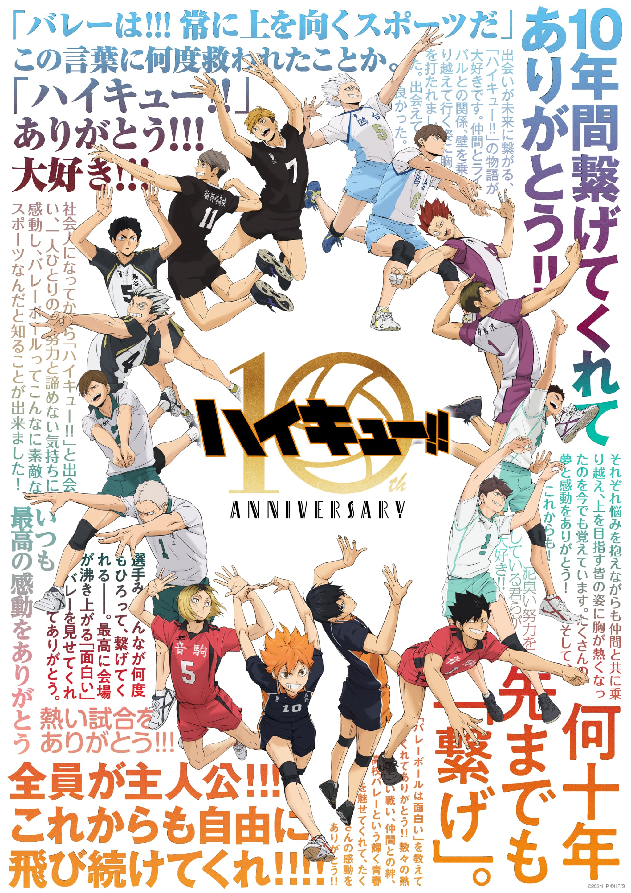

YouTubeでは，東海オンエアや料理系の動画，J-POPのLIVE映像をよく見ています． 個人的に好きな動画は「【食えなきゃ負け】相手を満腹にしろ！ご飯食べ食べポーカー！！！」です！
家庭用ゲームからスマホゲームまで幅広くプレイしています． 院に入ってからは．友達の影響で始めた「e-football」や，研究室メンバーの影響で「大乱闘スマッシュブラザーズ」をよくプレイしています． 最近ではNINTENDO SWITCH2を購入し，「マリオカート ワールド」もプレイしています！
主に日常系やラブコメ，スポーツアニメを見ています． 最近では「薫花は凛と咲く」や「雨と君と」を見ています． 「ハイキュー！！」は高校時に物事の捉え方，取り組み方を学んだアニメで，思い入れのあるアニメです！
飲食店でアルバイトをしていることもあり，料理を作る，食べることが好きです．好きな食べ物は焼きそばです！ 得意料理はだし巻き卵です．